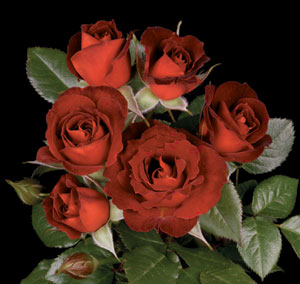
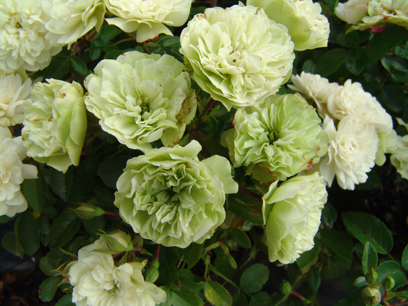

Miniature Roses
Miniature roses first became popular during the 1800s, then were almost forgotten. Lately, their popularity has been growing rapidly. They are now among the most commonly hybridized of all roses. Miniature roses are represented by twiggy, repeat-flowering shrubs ranging from 6 to 36 inches in height, with most falling in the 12 to 24 inches height range, climbing varieties can reach up to 5 feet tall, still bearing tiny flowers. Blooms come in all the hybrid tea colors; many varieties also emulate the classic high centered hybrid tea flower shape, although they can be found as single, semi-double, double or in clustered form. Miniature roses are great in containers, make lovely borders, or for those with a small yard or balcony.

Coffee Bean
This miniature rose was hybridized by Bedard in 2006. It reaches 10 to 12 inches in height in mild climates. It has a glossy, medium-sized, and dark green foliage. It produces double russet blooms, 15 to 25 petals each. The rose possesses a mild, sweet fragrance. The introduction of this rose finally brings the rare color of russet into the world of miniature roses, with blooms that are smoky chocolate orange on the upper side of the petals, and cinnamon orange on the reverse. The exhibition-quality, high-centered blooms are borne singly in flushes throughout the season.

Green Ice
This miniature rose was hybridized by Moore in 1971. It is a vigorous, upright, and busy rose, reaching 12 to 16 inches in height. It has a small, dark green, glossy, and leathery foliage. It produces white to soft green blooms, 40 or more petals each. The blooms open in a manner that resembles that of old-garden roses. The rose has no fragrance. Green Ice has a spreading growth that makes it excellent for hanging baskets and containers.